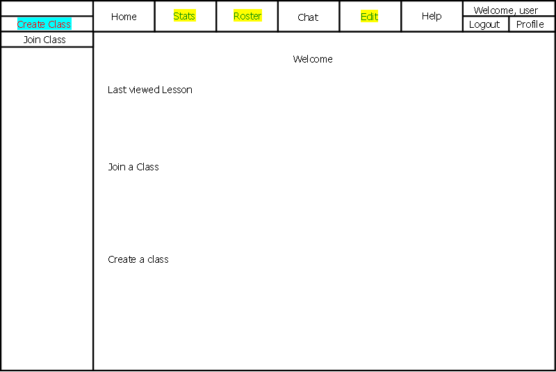

After the user logs in, they are taken to the screen shown below in Figure 2.1-1.

Figure 2.1-1: Initial screen.
Home:
The Home button will take the user to a screen that displays the user's recent history.
It also contains some generic helpful links to commonly used tasks.
The navigation bar on the left will show all classes and lessons the user has
subscribed to.
Stats:
This button takes the user to a page that shows statistics. Students will only be able to view
their own statistics but Instructors are able to view classwide statistics as well as
individual statistics. For more information see the Statistics section.
Roster:
This button is only useable to users with manage permissions. If the user has manage permissions
then the user will be taken to the Roster. The Roster provides functionality to add/remove users,
and modify permissions. For more information see the Roster section.
Chat:
This button takes you to an embedded chat window. Each class has its own IRC channel that allows
Students to converse with each other and the Instructor. For more information see the
Chat section.
Edit:
The Edit button is visible only for instructors. When navigating lessons
they will have the option of clicking the Edit button to edit the contents of
the lesson. See the Editing Lessons section for more details.
Help:
This brings you to a general help page. This section isn't completed.
Logout:
This button logs the user out and brings them to the Login screen.
Profile:
This button takes the user to a page in order to edit their profile.
Create Class:
This button is only available to Instructors. It takes the Instructor to the
Create Class page.
Join Class:
This button allows anyone to reach the Join Class page(TODO).
The Nav Bar:
The Nav Bar contains all lessons that the user is subscribed to or owns. A
user can navigate through the lessons by clicking the symbol to the left of
the topic to expand and view sub-lessons. To collapse the lesson the symbol
to the left is clicked again. To view a lesson, the user will click
on the name of the topic he or she wishes to see.
The Nav Bar(instructors):
In addition to the content above, instructors are able to add new sub-
lessons by clicking the "+" sign to the right of a lesson. This will add
a new lesson to the end of the sub-lessons in that section. They will aslo
have the ability to add a class by clicking hte Add new button on the bottom
of the Nav Bar. See "Creating Lessons" for more details.